Image processing#
Duration ~50 min · Session Day 1, Python notebooks
In the previous notebook, thresholding gave 34 nuclei while the annotation contains 39. Here you will examine why the counts differ, then try preprocessing and watershed segmentation. You will also work with an image that has uneven illumination.
This notebook covers
recognising uneven illumination, and correcting it
choosing between a Gaussian and a median filter, and the reason for each
using morphological operations to clean up a binary image
separating touching objects with a watershed
the difference between semantic and instance segmentation
Data: data/bbbc020/ field 2h_1 (the nuclei from last notebook) and
data/misc/rice.png.
1. Why did we get 34 instead of 39?#
import numpy as np
import tifffile
import matplotlib.pyplot as plt
from skimage.filters import threshold_otsu
from skimage.measure import label
from skimage.color import label2rgb
from course import DATA, show
nuclei = tifffile.imread(DATA / "bbbc020" / "images" / "2h_1_nuclei.tif")
truth = tifffile.imread(DATA / "bbbc020" / "gt" / "2h_1_nuclei_labels.tif")
naive = label(nuclei > threshold_otsu(nuclei))
print("naive threshold:", naive.max(), "objects | truth:", truth.max())
naive threshold: 34 objects | truth: 39
# How big is each object we found? Sort the areas and look at the small end.
areas = np.sort([(naive == i).sum() for i in range(1, naive.max() + 1)])
print("ten smallest object areas:", areas[:10])
print("ten largest object areas :", areas[-10:])
ten smallest object areas: [236 304 372 465 515 517 518 532 535 543]
ten largest object areas : [1100 1217 1261 1348 1365 1397 1425 1467 1597 2019]
Read the two ends of that list against each other.
A typical nucleus in the expert annotation covers about 560 pixels. The smallest thing the threshold found is 236 px: small, but a plausible nucleus, not a speck of noise. So this image does not have a speck problem, and running a size filter over it would achieve nothing except deleting real nuclei.
The large end is where the trouble is. The biggest “object” is over 2000 px, three times the typical nucleus. That is not one nucleus; that is two or three nuclei touching, thresholded into a single connected region and given a single label. Every one of those costs a nucleus from the count, which is why the total came out below the truth.
Tip
Inspecting the size distribution before reaching for a filter takes ten seconds and shows which problem is actually present. Applying a cleanup step without justifying it is how data gets deleted and called preprocessing.
2. Uneven illumination#
from imageio.v3 import imread
rice = imread(DATA / "misc" / "rice.png")
show(rice, title="rice grains")
plt.show()
# Is the lighting even? Compare the top of the image with the bottom.
third = rice.shape[0] // 3
print(f"mean intensity, top third : {rice[:third].mean():.1f}")
print(f"mean intensity, bottom third: {rice[-third:].mean():.1f}")
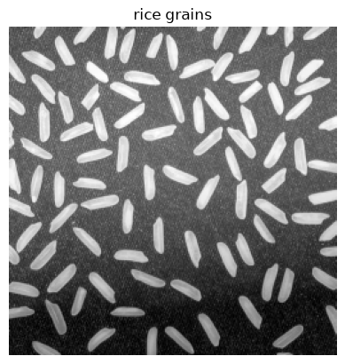
mean intensity, top third : 131.9
mean intensity, bottom third: 80.8
The top of the image is much brighter than the bottom, not because the grains differ, but because the illumination does. This is extremely common: uneven lamps, vignetting, an angled sample.
It breaks global thresholding completely, because one threshold cannot be right everywhere at once.
t = threshold_otsu(rice)
naive_rice = label(rice > t)
show(rice > t, title=f"one global threshold ({t}) - {naive_rice.max()} objects")
plt.show()
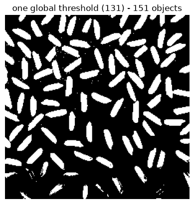
Look at the bottom of that mask: whole grains are missing, because down there even a grain is darker than the threshold. Meanwhile the bright top has merged background into the foreground. The count is 151, although the image contains roughly 95–100 grains.
Estimating the background and removing it#
from skimage.filters import gaussian
# Blur the image so heavily that the grains vanish and only the lighting is left.
background = gaussian(rice, sigma=20, preserve_range=True)
fig, axes = plt.subplots(1, 3, figsize=(15, 4))
show(rice, title="original", ax=axes[0])
show(background, title="estimated background (heavy blur)", ax=axes[1])
show(rice - background, title="original - background", ax=axes[2])
plt.show()
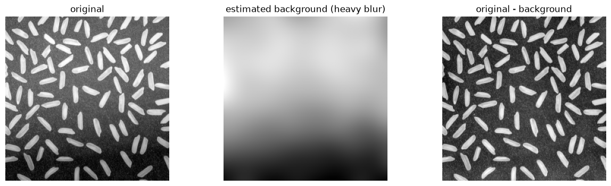
That is the whole idea of background subtraction: blur away everything of interest, keep what is left as an estimate of the illumination, and subtract it.
skimage has a purpose-built version of this called a white top-hat, which
keeps only features smaller than a given size. It is what Fiji’s
Process ▸ Subtract Background… (rolling ball) is doing.
from skimage.morphology import white_tophat, disk
# disk(12) must be comfortably LARGER than a grain and smaller than the
# illumination pattern - that is the only tuning this needs.
corrected = white_tophat(rice, disk(12))
t2 = threshold_otsu(corrected)
fixed = label(corrected > t2)
fig, axes = plt.subplots(1, 2, figsize=(12, 4.5))
show(rice > t, title=f"before: {naive_rice.max()} objects", ax=axes[0])
show(corrected > t2, title=f"after top-hat: {fixed.max()} objects", ax=axes[1])
plt.show()
print("before:", naive_rice.max(), " after:", fixed.max(), " (expected ~95-100)")
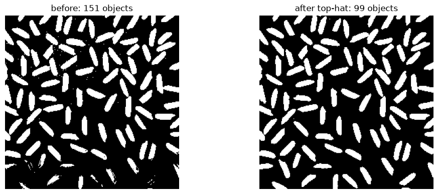
before: 151 after: 99 (expected ~95-100)
From 151 to 99, by fixing the image rather than fiddling with the threshold.
This is the single most valuable habit in this notebook. When a segmentation is bad, the instinct is to hunt for a better threshold. Usually the threshold is not the problem.
3. Denoising: Gaussian vs median#
rng = np.random.default_rng(0)
# Two different kinds of noise, to make the point that the fix differs.
grainy = rice.astype(float) + rng.normal(0, 15, rice.shape)
speckled = rice.copy()
spots = rng.random(rice.shape)
speckled[spots < 0.02] = 0 # pepper
speckled[spots > 0.98] = 255 # salt
fig, axes = plt.subplots(1, 2, figsize=(11, 4))
show(grainy, title="gaussian noise", ax=axes[0])
show(speckled, title="salt & pepper noise", ax=axes[1])
plt.show()
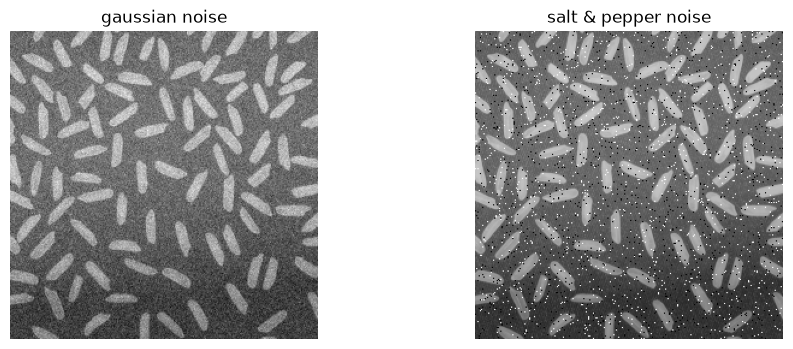
from skimage.filters import median
from skimage.morphology import disk as disk_fp
fig, axes = plt.subplots(2, 3, figsize=(14, 8))
show(speckled, title="salt & pepper", ax=axes[0][0])
show(gaussian(speckled, sigma=2, preserve_range=True), title="gaussian filter", ax=axes[0][1])
show(median(speckled, disk_fp(2)), title="median filter", ax=axes[0][2])
show(grainy, title="gaussian noise", ax=axes[1][0])
show(gaussian(grainy, sigma=2, preserve_range=True), title="gaussian filter", ax=axes[1][1])
show(median(grainy, disk_fp(2)), title="median filter", ax=axes[1][2])
plt.tight_layout()
plt.show()
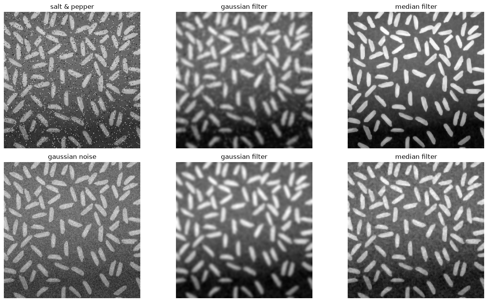
Look at the top row. The Gaussian filter smears each salt and pepper dot into a gray blob: it averages, so one extreme pixel contaminates its whole neighbourhood. The median filter removes them outright, because the median of a neighbourhood simply ignores a single wild value.
On the bottom row, with ordinary grainy noise, both do a reasonable job.
Rule of thumb: median for isolated extreme pixels (dead pixels, cosmic rays, salt and pepper), Gaussian for general graininess. A Gaussian also blurs edges, which matters when a threshold comes next.
4. Morphology: cleaning up a binary image#
The operations so far worked on intensities. Morphological operations work on the shape of a binary image. The four used constantly are:
operation |
what it does |
use it to |
|---|---|---|
erosion |
shave pixels off every edge |
shrink objects, break thin bridges |
dilation |
add pixels to every edge |
grow objects, close small gaps |
opening |
erode, then dilate |
remove small specks, keep big shapes |
closing |
dilate, then erode |
fill small holes, keep outlines |
Opening and closing are the useful pair, because each undoes its own size change : an opening removes specks without shrinking what survives.
# scikit-image >= 0.26 uses `opening`/`closing` for both binary and greyscale
# images; the old `binary_opening`/`binary_closing` names are deprecated.
from skimage.morphology import opening, closing
from scipy.ndimage import binary_fill_holes
mask = nuclei > threshold_otsu(nuclei)
fig, axes = plt.subplots(1, 4, figsize=(17, 4))
show(mask, title="raw mask", ax=axes[0])
show(opening(mask, disk(2)), title="opening (specks gone)", ax=axes[1])
show(closing(mask, disk(2)), title="closing (holes filled)", ax=axes[2])
show(binary_fill_holes(mask), title="fill_holes (all holes)", ax=axes[3])
plt.show()
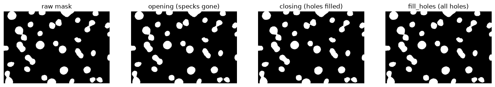
5. Putting it together#
from skimage.morphology import remove_small_objects
# 1. smooth, so noise stops crossing the threshold
smoothed = gaussian(nuclei, sigma=1, preserve_range=True)
# 2. threshold the smoothed image
clean = smoothed > threshold_otsu(smoothed)
# 3. fill interior holes
clean = binary_fill_holes(clean)
# 4. drop anything too small to be a nucleus. On THIS image that removes
# nothing - we checked the size distribution above - but it is cheap
# insurance on a batch where some images are noisier than others.
# NOTE: in scikit-image >= 0.26 this parameter is `max_size`, and it removes
# objects smaller than OR EQUAL TO it. Older tutorials say `min_size`.
clean = remove_small_objects(clean, max_size=40)
cleaned = label(clean)
fig, axes = plt.subplots(1, 2, figsize=(12, 4.5))
axes[0].imshow(label2rgb(naive, bg_label=0)); axes[0].set_axis_off()
axes[0].set_title(f"before: {naive.max()} objects")
axes[1].imshow(label2rgb(cleaned, bg_label=0)); axes[1].set_axis_off()
axes[1].set_title(f"after: {cleaned.max()} objects")
plt.show()
print("naive:", naive.max(), " cleaned:", cleaned.max(), " truth:", truth.max())
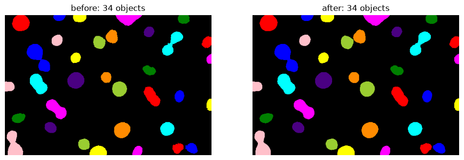
naive: 34 cleaned: 34 truth: 39
The count has not moved: 34 before, 34 after. Smoothing and hole-filling tidied the shapes, and the size filter had nothing to remove: exactly as the size distribution predicted.
Compare each intermediate result with the starting image. Smoothing and hole-filling changed the shapes, but they did not improve this count. The remaining error comes from touching nuclei.
The one that is left is a pair of nuclei that touch, and no amount of threshold-tuning will separate them, as far as intensity is concerned they really are one connected region. That needs a different idea.
6. Watershed: a second route from semantic to instance#
The last notebook turned a semantic segmentation into an instance segmentation with connected component labeling, where pixels that touch belong to the same object, and showed exactly where that rule breaks: when two nuclei touch they are one connected region, and get one label.
The pixels alone cannot say where to divide them. Their shape can. A pair of touching nuclei is a wide blob with a narrow waist, and that waist is where the boundary belongs.
The watershed exploits this. It treats the binary image as a landscape: imagine each object as a hill; flood the landscape from the top of each hill, and where two floods meet is the boundary between the objects.
Two things are needed: a landscape, and a starting point inside each object, called a seed. The landscape comes from the distance transform, which replaces every foreground pixel with its distance to the nearest background pixel. The middle of an object is far from any edge, so it becomes a peak.
from scipy.ndimage import distance_transform_edt
from skimage.segmentation import watershed
from skimage.feature import peak_local_max
# Zoom in on a pair that merged.
region = (slice(33, 109), slice(382, 450))
sub_mask = clean[region]
print("objects in this crop:", label(sub_mask).max(), " (there are really 2 nuclei)")
distance = distance_transform_edt(sub_mask)
fig, axes = plt.subplots(1, 2, figsize=(11, 4.5))
show(nuclei[region], title="original", ax=axes[0])
show(distance, title="distance transform: two hills, one blob", cmap="magma", ax=axes[1])
plt.show()
objects in this crop: 1 (there are really 2 nuclei)
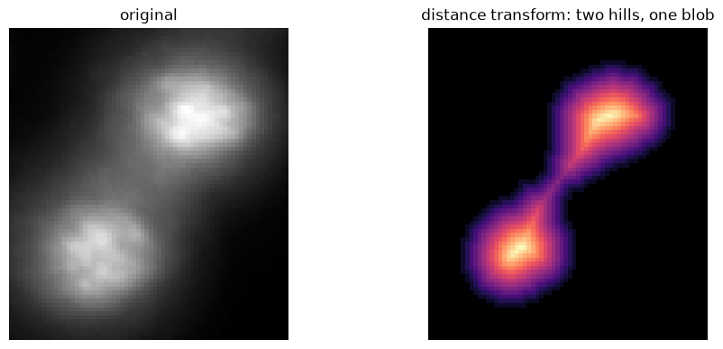
Finding seeds from local maxima#
Two hills, so: find the local maxima and use those as seeds. peak_local_max
does exactly that, and needs nothing but the landscape.
def seeds_from_peaks(distance, mask):
"""Label every local maximum of `distance` as its own seed."""
coordinates = peak_local_max(distance, labels=mask)
seeds = np.zeros(mask.shape, dtype=int)
for i, (row, column) in enumerate(coordinates, start=1):
seeds[row, column] = i
return seeds
seeds = seeds_from_peaks(distance, sub_mask)
result = watershed(-distance, seeds, mask=sub_mask)
print("seeds found:", seeds.max())
print("objects after watershed:", result.max(), " (we wanted 2)")
seeds found: 6
objects after watershed: 6 (we wanted 2)
fig, axes = plt.subplots(1, 3, figsize=(16, 4.5))
show(nuclei[region], title="original", ax=axes[0])
show(distance, title="distance transform", cmap="magma", ax=axes[1])
axes[2].imshow(label2rgb(result, bg_label=0)); axes[2].set_axis_off()
axes[2].set_title(f"watershed from raw peaks: {result.max()} objects")
plt.show()
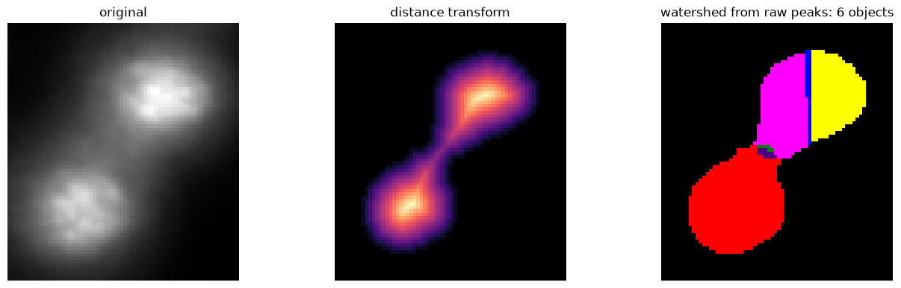
The watershed produced six regions from two nuclei because it received six seeds.
The problem is the seeds. A distance transform is not smooth: every small
irregularity in the binary image boundary pushes the distance up or down a little, so a
single nucleus has several local maxima a pixel or two apart. peak_local_max
reports all of them.
This is the failure mode to recognise: when a watershed shatters objects into fragments, the seeds are almost always the reason.
There are two straightforward ways to fix it.
Fix 1: keep only the cores, by thresholding the distance#
Rather than every local maximum, take the regions that lie deep inside the
object: pixels further than t from any edge. Each such core becomes one seed.
This gives the parameter a physical meaning. distance > 5 says “a seed is a
region whose centre is at least 5 pixels from the nearest boundary”: that is,
only objects with a radius of about 5 px or more get their own seed.
for t in [4, 5, 6, 7]:
seeds = label(distance > t)
n = watershed(-distance, seeds, mask=sub_mask).max()
print(f"distance > {t} -> {seeds.max()} seed(s) -> {n} object(s)")
distance > 4 -> 1 seed(s) -> 1 object(s)
distance > 5 -> 2 seed(s) -> 2 object(s)
distance > 6 -> 2 seed(s) -> 2 object(s)
distance > 7 -> 2 seed(s) -> 2 object(s)
At t = 4 the two nuclei still share a single core and stay merged; from t = 5
upward the answer settles at two and stays there. A stable range is useful evidence that the count does not depend on one precise
choice of threshold. Check the boundaries as well as the count.
Fix 2: smooth the landscape, then find peaks#
The other approach leaves the seed-finding alone and fixes the landscape. The spurious maxima are small bumps, so blur them away before looking for peaks: the same trick as smoothing an image before thresholding it, applied to the distance map instead.
Note that peak_local_max is still called with no tuning arguments. All the
control now sits in one Gaussian.
from skimage.filters import gaussian as gaussian_filter
for sigma in [1, 2, 3]:
smoothed_distance = gaussian_filter(distance, sigma=sigma, preserve_range=True)
seeds = seeds_from_peaks(smoothed_distance, sub_mask)
n = watershed(-smoothed_distance, seeds, mask=sub_mask).max()
print(f"sigma = {sigma} -> {seeds.max()} seed(s) -> {n} object(s)")
sigma = 1 -> 2 seed(s) -> 2 object(s)
sigma = 2 -> 2 seed(s) -> 2 object(s)
sigma = 3 -> 2 seed(s) -> 2 object(s)
smoothed_distance = gaussian_filter(distance, sigma=2, preserve_range=True)
seeds = seeds_from_peaks(smoothed_distance, sub_mask)
split = watershed(-smoothed_distance, seeds, mask=sub_mask)
fig, axes = plt.subplots(1, 4, figsize=(19, 4.5))
show(nuclei[region], title="original", ax=axes[0])
show(distance, title="raw distance", cmap="magma", ax=axes[1])
show(smoothed_distance, title="smoothed distance", cmap="magma", ax=axes[2])
axes[3].imshow(label2rgb(split, bg_label=0)); axes[3].set_axis_off()
axes[3].set_title(f"watershed: {split.max()} objects")
plt.show()
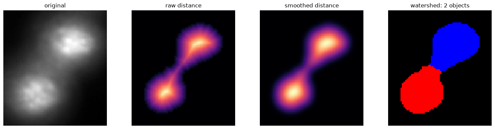
Compare the two distance maps in the middle. The raw one is faintly lumpy; the smoothed one has two clean summits. Same algorithm, same seed-finder, right answer, because the landscape it was reading is no longer noisy.
Note the -smoothed_distance passed to watershed. The algorithm floods
upward from low ground, so the landscape is inverted: negating turns each
hilltop into the bottom of a basin.
Neither fix is more correct than the other. Thresholding gives a parameter in units of object size, which is easy to reason about; smoothing keeps the seed-finding parameter-free and copes better with objects of very different sizes. Trying both, and seeing which is more stable, is the reliable way to choose.
On the whole image#
distance_full = distance_transform_edt(clean)
raw_peaks = watershed(-distance_full, seeds_from_peaks(distance_full, clean), mask=clean)
threshold_seeded = watershed(-distance_full, label(distance_full > 5), mask=clean)
smoothed_full = gaussian_filter(distance_full, sigma=3, preserve_range=True)
smooth_seeded = watershed(-smoothed_full, seeds_from_peaks(smoothed_full, clean), mask=clean)
print(f"{'seeding':28s} {'objects':>8s} (truth: {truth.max()})")
print("-" * 40)
print(f"{'raw peaks':28s} {raw_peaks.max():8d}")
print(f"{'distance > 5':28s} {threshold_seeded.max():8d}")
print(f"{'smoothed distance + peaks':28s} {smooth_seeded.max():8d}")
print(f"{'no watershed at all':28s} {cleaned.max():8d}")
seeding objects (truth: 39)
----------------------------------------
raw peaks 95
distance > 5 36
smoothed distance + peaks 40
no watershed at all 34
final = smooth_seeded
fig, axes = plt.subplots(1, 3, figsize=(16, 4.5))
show(nuclei, title="original", ax=axes[0])
axes[1].imshow(label2rgb(cleaned, bg_label=0)); axes[1].set_axis_off()
axes[1].set_title(f"before watershed: {cleaned.max()}")
axes[2].imshow(label2rgb(final, bg_label=0)); axes[2].set_axis_off()
axes[2].set_title(f"after watershed: {final.max()}")
plt.show()
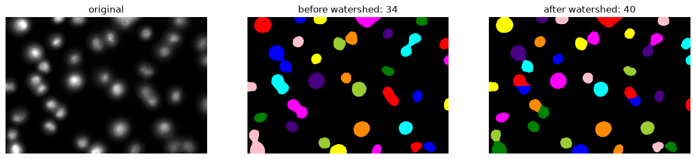
The raw peaks shatter the image into far more pieces than there are nuclei: the same failure as on the crop, at scale. Both fixes bring it back to something sensible, and the smoothed version lands closest to the annotation.
It did not find them all. Some nuclei overlap so much that even a smoothed distance map shows a single hill, and no seeding rule separates those.
So we now have two ways from a semantic segmentation to an instance segmentation, and they fail differently:
route |
rule |
fails when |
|---|---|---|
connected component labeling ( |
touching pixels are one object |
objects touch each other |
watershed (here) |
split at the narrow waists |
objects overlap heavily, or are irregular |
On this image, the watershed changed the count most, but some nuclei remain merged. A count alone cannot show whether the right objects were found: 40 predictions could include both missed nuclei and false detections. On day 2, we will compare segmentations with annotations using pixel and object metrics.
Recap#
problem |
symptom |
fix |
|---|---|---|
uneven illumination |
one threshold cannot fit everywhere |
|
noise crossing the threshold |
tiny speck “objects” |
|
isolated extreme pixels |
salt & pepper dots |
|
holes inside objects |
ring-shaped labels |
|
leftover specks |
too many objects |
|
objects touching |
two nuclei, one label |
|
And the habit underneath all of it: when a segmentation is bad, look at the image before looking at the threshold.
Plus the structural idea this notebook added: a threshold produces a semantic segmentation, and there is more than one way to turn that into instances. Connected components is the simple one; the watershed is the one that copes with objects that touch.
Next: on day 2, we will compare these results with learned segmentation methods and measure their accuracy.